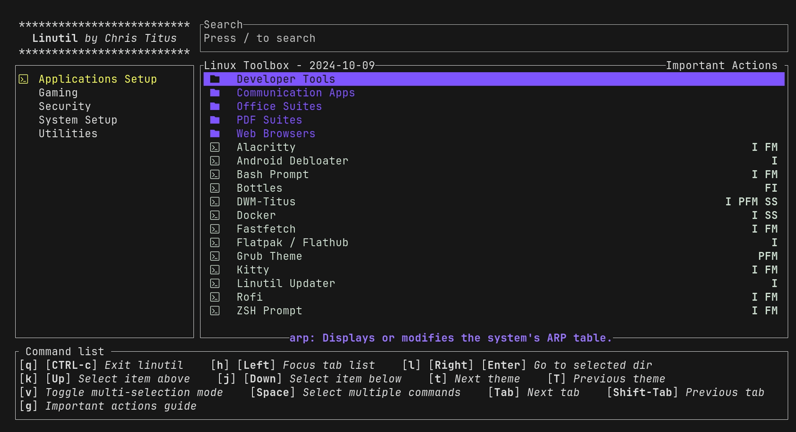

Installation
A supported Debian-, Arch-, or Fedora/RHEL-family distribution with Xorg is required.
Quick Install (Recommended)
The easiest way is via Linutil:
curl -fsSL https://christitus.com/linux | sh
In the TUI, press v to multi-select, then select dwm, bash prompt,
and alacritty. Press Enter to install.

Manual Install
1. Dependencies
The supported dependency path is the installer because it resolves package names for Debian-, Arch-, and Fedora/RHEL-family systems from the shared map:
./install.sh --dry-run --non-interactive --profile core
./install.sh --profile full
Use core for the required build/X11/session packages and one terminal,
recommended for the desktop layer, or full for optional extras such as
file-manager integration, portals, wallpapers, and display-manager setup.
2. Clone and Build
git clone https://github.com/ChrisTitusTech/dwm-titus.git
cd dwm-titus
cp config.def.h config.h
make
sudo make install
Automated Installer
./install.sh
The script detects the distribution family and handles dependency
installation, font copying, display-manager integration, and config placement.
Existing user configuration and .xinitrc files are preserved.
Installer package profiles are selected with DWM_INSTALL_PROFILE:
core: required build packages, X11/session runtime, and one supported terminal.recommended:coreplus the recommended desktop layer such as Quickshell, Quickshell, Picom, Feh, Dex, fonts, theming, screenshot, audio, Bluetooth control and tray tools, and brightness tools. It also installs portable GTK theme packages where available and installs Nordic system-wide for the default Nord theme.full:recommendedplus optional extras such as file-manager integration, network tray utilities, portals, wallpapers, and display-manager setup.
The default is full to preserve the historical automated installer behavior.
For a minimal install:
DWM_INSTALL_PROFILE=core ./install.sh
The same profile can be selected with a flag:
./install.sh --profile core
Interactive runs print the resolved package plan before prompting. For CI, packaging checks, or scripted validation, use the non-interactive flags:
./install.sh --dry-run --non-interactive --profile core
./install.sh --non-interactive --yes --profile recommended
Starting dwm
Display manager (SDDM, GDM, LightDM): log out and select dwm from the session list.
startx:
startx
The provided .xinitrc disables screen blanking, starts the configured Quickshell panel, and runs dwm.
Minimal Session Profile
The minimal supported profile is useful for lean systems, recovery sessions, and portability testing. It keeps only:
- an X11 server and either a display-manager session or
startx - D-Bus session support
dwm- one supported terminal available through
dwm-terminal - required X11 helpers used by core startup and display commands, such as
xrandr,xset, andxsetroot
Quickshell, Picom, Feh, Dex, a polkit agent, screenshot tools, wallpapers, tray
utilities, and audio or brightness helpers are optional in this profile.
Missing optional components should appear as degraded features in
dwm-diagnostics, not as session-fatal failures.
For startx, a minimal .xinitrc can be:
#!/bin/sh
xset s off
xset -dpms
xsetroot -cursor_name left_ptr
exec dbus-run-session dwm
If the login path already creates a user D-Bus session, use exec dwm
instead of wrapping it with dbus-run-session.
After installation, verify the profile with:
dwm-diagnostics
dwm-terminal --print-command
dwm-diagnostics must report zero required failures before treating the
minimal profile as ready. Optional degraded features can remain unresolved.
Getting Started
After installing, the first thing to know: Super = the Windows key.
Press Super + / at any time to open the interactive keybind viewer.
Essential Actions
| Action | Keys |
|---|---|
| Open terminal | Super + X |
| App launcher (Quickshell) | Super + R |
| Close window | Super + Q |
| Power menu | Super + Ctrl + Q |
| Control Center | Super + F1 |
| Keybind viewer | Super + / |
Switching Tags (Workspaces)
Tags 1–9 act as workspaces. Use Super + a number to switch.
| Action | Keys |
|---|---|
| Switch to tag | Super + 1–9 |
| Move window to tag | Super + Shift + 1–9 |
| Show all tags | Super + 0 |
Layouts
Three layouts are available — switch between them instantly.
| Layout | Keys |
|---|---|
| Tiling (master + stack) | Super + T |
| Floating | Super + Shift + M |
| Fullscreen (monocle) | Super + M |
See Keybindings for the full reference.
Keybindings
Press Super + / inside dwm to open a live, searchable Quickshell keybind viewer.
MODKEY = Super (Windows key) in the shipped config.h.
Bindings are defined in config/hotkeys.toml and reload instantly on save — no recompile needed.
Launchers
| Keys | Action |
|---|---|
Super + R | App launcher (Quickshell) |
Super + X | Terminal |
Super + E | File manager |
Super + B | Browser |
Super + / | Keybind viewer |
Super + F1 | Control Center |
Super + Shift + R | Restart Quickshell |
Screenshots
| Keys | Action |
|---|---|
Super + P | Full screenshot |
Super + Shift + P | Screenshot selection → file |
Super + Ctrl + P | Screenshot selection → clipboard |
Web Apps
| Keys | Action |
|---|---|
Super + A | ChatGPT |
Super + Shift + A | Gemini |
Super + Shift + X | X/Twitter — new post |
Window Management
| Keys | Action |
|---|---|
Super + J | Focus next window |
Super + K | Focus previous window |
Super + Shift + J | Move window down in stack |
Super + Shift + K | Move window up in stack |
Super + Return | Promote window to master |
Super + Q | Close window |
Super + I | Add window to master area |
Super + D | Remove window from master area |
Super + H | Shrink master area |
Super + L | Expand master area |
Super + Shift + H | Increase window cfact size |
Super + Shift + L | Decrease window cfact size |
Super + Shift + O | Reset window cfact |
Layouts
| Keys | Action |
|---|---|
Super + T | Tiling layout |
Super + M | Fullscreen (monocle) |
Super + Space | Toggle floating for window |
Super + Shift + M | Toggle floating for window |
Super + Shift + Y | Fake fullscreen (bar stays) |
Super + Shift + B | Toggle bar visibility |
Tags (Workspaces)
| Keys | Action |
|---|---|
Super + 1–9 | Switch to tag |
Super + Ctrl + 1–9 | Also show tag alongside current |
Super + Shift + 1–9 | Move window to tag |
Super + Ctrl + Shift + 1–9 | Also show window on that tag |
Super + 0 | Show all tags |
Super + Tab | Previous tag |
Multi-Monitor
| Keys | Action |
|---|---|
Super + , | Focus left monitor |
Super + . | Focus right monitor |
Super + Shift + , | Send window to left monitor |
Super + Shift + . | Send window to right monitor |
Media Keys
| Keys | Action |
|---|---|
XF86AudioRaiseVolume | Volume up |
XF86AudioLowerVolume | Volume down |
XF86AudioMute | Mute toggle |
XF86MonBrightnessUp | Brightness up |
XF86MonBrightnessDown | Brightness down |
Session & Power
| Keys | Action |
|---|---|
Super + Ctrl + Q | Power menu |
Super + Shift + Q | Quit dwm |
Super + Ctrl + Shift + R | Reboot |
Super + Ctrl + Shift + S | Suspend |
Mouse
| Action | Function |
|---|---|
Super + Left drag | Move window |
Super + Middle click | Toggle floating |
Super + Right drag | Resize window |
Customizing Keybinds
Edit config/hotkeys.toml — changes take effect on save, no recompile required.
[vars]
terminal = "dwm-terminal"
keys = [
{ mod="SUPER SHIFT", key="f", desc="Firefox", func="spawn", exec=["firefox"] },
]
See the comments in hotkeys.toml for a full list of func values and modifier syntax.
The browser binding uses dwm-default-apps open. Configure it with
dwm-default-apps browsers and dwm-default-apps set-browser <desktop-id>.
Configuration
dwm-titus keeps user configuration under
${XDG_CONFIG_HOME:-$HOME/.config}/dwm-titus/. Hotkeys and themes
live-reload on save — no recompile needed for most changes.
| File | Purpose |
|---|---|
config/hotkeys.toml | All keybindings |
config/themes.toml | Colors, themes, border size |
power.conf | Control Center screen DPMS and auto-lock choices |
For deeper changes (window rules, fonts, refresh rate), edit config.h and run make && sudo make install.
config.h Essentials
config.h is your personal copy of config.def.h. It is created automatically by make if it doesn’t exist.
$EDITOR config.h
make && sudo make install
Key Options
| Setting | Description |
|---|---|
refresh_rate | Match your monitor (default 60; set 120 for high-refresh) |
fonts[] | Font family and size used in the bar |
colors[] | Managed by themes.toml — rarely edit directly |
autostart[] | Programs launched on dwm start |
rules[] | Per-app window rules (floating, tag assignment, terminal flag) |
keys[] | Fallback static keybinds (prefer hotkeys.toml) |
MODKEY | Mod4Mask = Super, Mod1Mask = Alt |
Window Rules
Rules in config.h let you assign windows to specific tags or force float:
/* class instance title tags mask isfloating isterminal noswallow monitor */
{ "Gimp", NULL, NULL, 0, 1, 0, 0, -1 },
{ "Firefox", NULL, NULL, 1 << 1, 0, 0, -1, -1 },
hotkeys.toml — Live Keybinds
Add or change bindings without recompiling. Save the file and they apply instantly.
[vars]
terminal = "dwm-terminal"
webapp = "webapp-launch"
keys = [
{ mod="SUPER", key="x", desc="Terminal", func="spawn", exec=["$terminal"] },
{ mod="SUPER SHIFT", key="f", desc="Firefox", func="spawn", exec=["firefox"] },
]
dwm-terminal selects the first installed supported terminal at launch time.
Set DWM_TERMINAL or replace terminal with a specific command if you want a
fixed terminal.
Default applications use freedesktop settings. Run dwm-default-apps browsers
to list browser desktop files, dwm-default-apps set-browser firefox.desktop
to set the default browser, or dwm-default-apps set-mime <mime> <desktop-id>
for other file types.
Display profiles are optional files under
${XDG_CONFIG_HOME:-$HOME/.config}/dwm-titus/display-profiles. Use
dwm-display-profile template to print the format, dwm-display-profile list
to show profiles, and dwm-display-profile apply <name> to run the profile
through xrandr.
Power settings are managed from Control Center -> Power. The generated
power.conf persists screen DPMS state, display-off timing, and automatic
locking timing. Startup applies this file before background session services
are launched.
Modifier Syntax
Use space-separated modifiers: "SUPER", "SUPER SHIFT", "SUPER CTRL", "SUPER CTRL SHIFT".
Available Functions
func | Parameters | Description |
|---|---|---|
spawn | exec=[...] or cmd="..." | Run a program |
killclient | — | Close focused window |
zoom | — | Promote/demote master |
focusstack | i=1 or i=-1 | Focus next/prev window |
movestack | i=1 or i=-1 | Reorder in stack |
incnmaster | i=1 or i=-1 | Change master count |
setmfact | f=0.05 or f=-0.05 | Resize master area |
setcfact | f=0.25 / f=-0.25 / f=0.00 | Resize window slot |
setlayout | layout_idx=0/1/2 | 0=tile, 1=float, 2=monocle |
togglefloating | — | Float/tile window |
fullscreen | — | True fullscreen |
togglefakefullscreen | — | Fullscreen with bar |
togglebar | — | Show/hide bar |
focusmon | i=1 or i=-1 | Focus monitor |
tagmon | i=1 or i=-1 | Send window to monitor |
view | ui=-1 = all tags | Switch tag |
quit | — | Exit dwm |
Tag Bindings
Tag bindings auto-generate all four variants (switch, toggle-view, move, toggle-tag):
tag_keys = [
{ key="1", tag=0 },
{ key="2", tag=1 },
]
Notes on XDG Autostart
Recommend using Flatpak to install programs on startup:
flatpak install flathub io.github.flattool.Ignition
or you can create your own .desktop file in ~/.config/autostart/
set-refresh.desktop Example:
[Desktop Entry]
Type=Application
Exec=xrandr --output HDMI-0 --primary --mode 1920x1080 --pos 0x0 --rotate normal --rate 120 --output DP-0 --off --output DP-1 --off --output DP-2 --off --output DP-3 --off --output DP-4 --off --output DP-5 --off
Hidden=false
X-GNOME-Autostart-enabled=true
Name=Set Refresh
Theming
Themes are defined in config/themes.toml. Change the active theme and save
to update dwm, terminal, GTK, and Qt styling. No restart needed.
[active]
theme = "nord" # ← change this line to switch themes
Available Themes
Dark
| Theme | Description |
|---|---|
nord | Arctic, cool blue palette (default) |
dracula | Purple-tinted dark theme |
gruvbox | Warm retro earth tones |
catppuccin | Mocha variant — soft pastels |
tokyonight | Deep blue-grey night theme |
onedark | Atom One Dark inspired |
solarized | Dark variant of Solarized |
rosepine | Muted rose/pine tones |
everforest | Muted green forest palette |
monochrome | Black and white minimal |
Light
| Theme | Description |
|---|---|
catppuccin-latte | Catppuccin light variant |
gruvbox-light | Warm light tones |
solarized-light | Classic Solarized light |
rosepine-dawn | Rose Pine dawn variant |
tokyonight-day | Tokyo Night day variant |
Border Size
[appearance]
borderpx = 1 # 0 = no border, 1 = thin (default), 2-3 = thicker
What Each Theme Controls
Each [theme.name] section sets colors for all components:
| Key | Applies To |
|---|---|
normfgcolor / normbgcolor / normbordercolor | Unfocused bar and windows |
selfgcolor / selbgcolor / selbordercolor | Focused window and active tag |
term_bg / term_fg / term_cursor | Terminal background, text, cursor |
term_color0–term_color15 | Full 16-color terminal palette |
dark_mode | GTK dark preference and Capitaine cursor variant (true / false) |
gtk_theme | Optional installed GTK theme name for GTK apps such as Thunar |
Creating a Custom Theme
Add a new section to themes.toml:
[theme.mytheme]
normfgcolor = "#cdd6f4"
normbgcolor = "#1e1e2e"
normbordercolor = "#313244"
selfgcolor = "#cdd6f4"
selbgcolor = "#89b4fa"
selbordercolor = "#89b4fa"
term_bg = "#1e1e2e"
term_fg = "#cdd6f4"
term_cursor = "#f5e0dc"
# ... term_color0-15 ...
dark_mode = true
gtk_theme = "Nordic"
Then set theme = "mytheme" under [active] and save.
Applying Themes via Control Center
Open the Control Center with Super + F1, navigate to Appearance → Select Theme, and pick from the list. The theme switches immediately.
Wallpapers
Place images in ~/Pictures/backgrounds/. Use Super + Shift + W to randomize, or set a specific one:
feh --bg-fill ~/Pictures/backgrounds/mywall.jpg
Control Center
The Control Center is a Quickshell utility window for system health, quick actions, appearance settings, and keybind discovery.
Open: Super + F1, or run dwm-controlcenter from a
terminal.
The window floats above normal clients like the launcher, network popover, and power menu. Press Esc to close it.
Network Popover
The panel network indicator opens a Quickshell network popover. It shows active NetworkManager connections, scans visible Wi-Fi networks, and connects to open or WPA personal networks directly. Successful Wi-Fi connections are saved as NetworkManager profiles, so they reconnect normally in later sessions.
Hidden SSIDs and enterprise Wi-Fi are handled through the optional
nm-connection-editor fallback when it is installed.
Modules
System Health
System Health opens as a separate full-screen dashboard on the current
monitor. It starts two read-only scans: session checks run immediately, and a
privileged scan completes current-boot journal, kernel, system-service, and
drive checks. If cached or NOPASSWD sudo access is available, the scan runs
without a prompt. Otherwise the running polkit agent requests graphical
authorization. Cancelling the prompt leaves a partial report and marks its
coverage as incomplete.
The dashboard groups checks into:
- Boot and kernel errors from
journalctl, withdmesgas a fallback - Failed user and system services, one service per row
- Memory, pressure, load, swap, filesystem space, and inode use
- Local routing, resolver, and NetworkManager state
- X11, D-Bus, dwm, Quickshell, Picom, audio, and managed configuration
- Required commands, libraries, terminals, and package-database consistency
- Available battery, thermal, and SMART drive-health data
Use Issues Only to hide passing checks. Expand any card to see bounded evidence; the dashboard counts the complete matching log set even when only a sample is displayed. It does not contact an external service to test Internet connectivity and does not scan previous boots.
Boot-journal and kernel-error cards with matching entries include Copy and
Export. Copy sends the card’s readable bounded evidence to the X11
clipboard with xclip. Export saves the same content in the user’s home
directory as a private timestamped file, such as
boot2026-07-09-143000.txt or kernel-errors2026-07-09-143000.txt. Existing
files are never overwritten.
Repair buttons always require confirmation. Each failed service row offers
Start, Stop, Restart, Disable, and Enable. User units are managed with
systemctl --user; system units request administrator authorization through
polkit. An action is accepted only while that exact service remains failed.
The dashboard can also restart known desktop/audio components, launch the
interactive dependency installer, restart NetworkManager or Bluetooth, and
repair the detected time-synchronization provider.
Installing the health helper in a root-owned system path remains recommended:
sudo make install-system
The managed copy under ~/.local/share/dwm-titus is never elevated itself. If
the installed helper is unavailable, cached or NOPASSWD sudo can still run
the validated root-owned system commands. Polkit authorization requires the
root-owned installed helper.
Quick Actions
| Action | Description |
|---|---|
| Restart Picom | Kill and relaunch the compositor |
| Reload Wallpaper | Randomize from ~/Pictures/backgrounds/ |
| Toggle Compositor | Start or stop picom |
| Restart NetworkManager | sudo systemctl restart NetworkManager |
| Run Dependency Check | Opens check-deps.sh in a terminal |
| Install Missing Deps | Runs install.sh in a terminal |
Appearance
| Action | Description |
|---|---|
| Select Theme | Pick from all themes defined in themes.toml |
| Randomize Wallpaper | Random image from ~/Pictures/backgrounds/ |
| Open Wallpaper Folder | Open folder in file manager |
| GTK Theme Settings | Launch nwg-look for GTK theming |
Keybind Viewer
Displays all bindings from hotkeys.toml in a searchable Quickshell list. Same
as pressing Super + /.
Running from Terminal
dwm-controlcenter
The script is a compatibility wrapper around the Quickshell IPC target:
quickshell ipc --path "${XDG_DATA_HOME:-$HOME/.local/share}/dwm-titus/config/quickshell/shell.qml" call controlcenter toggle
Open or refresh System Health directly through its IPC target:
quickshell ipc --path "${XDG_CONFIG_HOME:-$HOME/.config}/quickshell/shell.qml" call systemhealth open
quickshell ipc --path "${XDG_CONFIG_HOME:-$HOME/.config}/quickshell/shell.qml" call systemhealth refresh
The diagnostic helper can also produce its structured snapshot in a terminal:
dwm-system-health scan-user
Patches & Features
dwm-titus is a heavily patched build. Below is every addition on top of stock dwm.
Window Management Patches
Pertag
Each tag independently remembers its layout, master count, and master/stack sizing. Switching tags restores the previous layout for that tag.
Cfact
Assign per-window size weights within the stack area. Windows are no longer forced to equal height.
| Keys | Action |
|---|---|
Super + Shift + H | Grow this window’s slot |
Super + Shift + L | Shrink this window’s slot |
Super + Shift + O | Reset to equal sizing |
Movestack
Reorder windows within the stack without using the mouse.
| Keys | Action |
|---|---|
Super + Shift + J | Move window down |
Super + Shift + K | Move window up |
Window Swallowing
When a GUI application is launched from a terminal, it replaces the terminal in the layout. Closing the app brings the terminal back.
Controlled via window rules in config.h:
{ "Alacritty", NULL, NULL, 0, 0, 1, 0, -1 }, /* isterminal = 1 */
Fullscreen (3-State)
Three fullscreen modes available:
| Mode | Keys | Description |
|---|---|---|
| True fullscreen | Super + M | Hides bar, takes full screen |
| Fake fullscreen | Super + Shift + Y | Looks fullscreen, bar still usable |
| Monocle layout | — | Single window view, bar visible |
Bar & EWMH
Quickshell Integration
The managed Quickshell layer reads dwm workspace and active-window state through
EWMH-compatible helpers so the panel stays synchronized with X11 state.
The Control Center includes a Power page for screen DPMS and automatic locking
settings backed by ${XDG_CONFIG_HOME:-$HOME/.config}/dwm-titus/power.conf.
EWMH Compliance
Implements _NET_WM_STATE, _NET_CURRENT_DESKTOP, _NET_NUMBER_OF_DESKTOPS, and related atoms so external tools and taskbars work correctly.
Window Icons
Title bar icons via _NET_WM_ICON. Applications that set this atom display their icon in the bar.
Systray
A built-in system tray is compiled in and can be configured in config.h.
Visual
Noborder
When only one window is visible on a tag, its border is automatically removed for a cleaner look. Borders return when a second window appears.
Cursor Warp
When focus moves to a different window or monitor (via keyboard), the mouse cursor warps to the center of the newly focused window.
Live Configuration
TOML Hotkeys (hotkeys.toml)
Keybindings are parsed from config/hotkeys.toml at runtime. Edit and save — bindings update without recompiling or restarting dwm.
TOML Themes (themes.toml)
Colors for dwm, terminal, GTK, and Qt are sourced from config/themes.toml.
Save the file to apply a new theme instantly across supported apps.
Scripts & Utilities
| Script | Description |
|---|---|
dwm-controlcenter | Quickshell control center (Super+F1) |
dwm-keybinds | Searchable keybind viewer (Super+/) |
dwm-screenshot | Wrapper for flameshot (full, gui, clip modes) |
theme-apply.sh | Applies active theme from themes.toml to all apps |
webapp-create | Creates a web app shortcut |
webapp-launch | Launches a URL as a standalone web app window |
autostart.sh | Runs programs on dwm start |
check-deps.sh | Checks all required dependencies |
disable-powersaving | Disables DPMS and screen blanking |
Multi-Monitor
Xinerama support keeps tags independent per monitor. Windows can be moved
between monitors with Super + Shift + ,/..
Troubleshooting
Run the dependency checker first — it covers most common issues:
dwm-diagnostics
Or use the Control Center → System Health.
dwm Won’t Start
Black screen / returns immediately to login:
- Run
dwm-diagnosticsand resolve any required X11/session failures. - Preview required packages with
./install.sh --dry-run --profile core. - Check
.xinitrcexists and ends withexec dwm - Run
startxfrom a TTY to see error output in the terminal
dwm: cannot open display:
- You must launch dwm from a TTY, not an existing X session
- If using a display manager, ensure
dwm.desktopis in/usr/share/xsessions/
No Status Bar / Quickshell Missing
- Install the recommended desktop layer:
./install.sh --profile recommended - Verify the managed config exists:
ls ~/.config/quickshell/shell.qml - Run manually:
quickshell --no-duplicate - Check fonts:
fc-list | grep -i meslo
Terminal Won’t Open (Super+X)
- Run
dwm-terminalfrom an existing shell to see the exact fallback message - Install a supported terminal:
alacritty,kitty,st,warp-terminal, orxterm - Or set a fixed terminal in
config/hotkeys.toml:[vars] terminal = "alacritty"
Browser Won’t Open (Super+B)
- Run
dwm-default-apps statusto inspect the current default browser - Run
dwm-default-apps browsersto list installed browser desktop files - Set one with
dwm-default-apps set-browser firefox.desktop - Ensure
xdg-utilsis installed soxdg-settings,xdg-mime, andxdg-openare available
Themes Not Applying
- Confirm
themes.tomlis at~/.config/dwm-titus/themes.toml - Check the
[active]section has a valid theme name - Manually trigger:
kill -USR1 $(pidof dwm) - Run
theme-apply.shdirectly to see any errors
Keybinds Not Working
- Check
config/hotkeys.tomlfor syntax errors — invalid TOML silently fails - Verify the key name is correct (use
xevto find X11 key names) - If a bind still doesn’t work, add it as a fallback in
config.hand recompile
Multi-Monitor Issues
- Tags not syncing across monitors: run
dwm-diagnostics - Cursor doesn’t follow focus: verify cursor warp is enabled in
config.h(cursorwarp = 1) - Display layout profiles: run
dwm-display-profile diranddwm-display-profile templateto create optionalxrandrprofiles
NVIDIA / Suspend Issues
- Black screen on wake: run
scripts/nvidia-suspend-test.shto diagnose - DPMS/screensaver issues: use Control Center -> Power, or run
scripts/disable-powersavingto disable blanking and DPMS for the current session
Picom / Compositor Artifacts
Restart picom via the Control Center (Quick Actions → Restart Picom) or:
pkill picom; setsid -f picom --backend xrender
If artifacts persist, set a different backend in ~/.config/picom.conf or run with
PICOM_BACKEND=glx or PICOM_BACKEND=egl.
Still Stuck?
- Open an issue: github.com/ChrisTitusTech/dwm-titus/issues
- Run the full check:
bash scripts/check-deps.sh